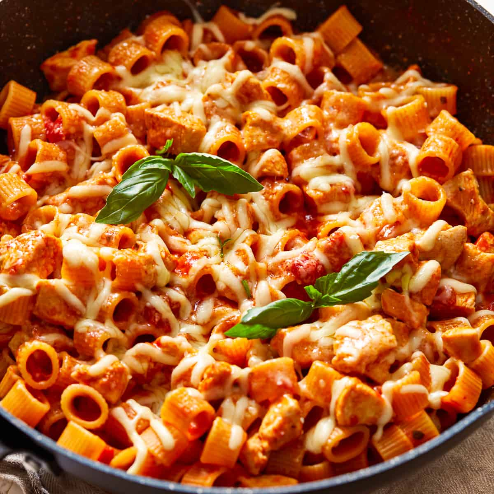

Pasta

Description
is a type of food typically made from an unleavened dough of wheat flour mixed with water or eggs, and formed into sheets or other shapes, then cooked by boiling or baking. Rice flour, or legumes such as beans or lentils, are sometimes used in place of wheat flour to yield a different taste and texture, or as a gluten-free alternative. Pasta is a staple food of Italian cuisine.
Ingredients
- Pasta
- Mixed vegetables
- Tomatoes
Steps
- Fill a large saucepan with water, put the lid on and bring to the boil over a high heat.
- Add a good pinch of sea salt.
- Once the water is boiling, stir in the pasta.
- Cook the pasta according to the packet instructions. To tell if your pasta is cooked, try a piece about a minute or so before the end of the cooking time. It’s ready when it’s soft enough to eat, but still has a bit of bite. The Italians say ‘al dente’.
- Scoop out a mugful of the starchy cooking water and set aside. This will help emulsify the pasta sauce.
- Drain the pasta in a colander over the sink. Now it’s ready to toss through your favourite sauce – it’s best to do this in the pan, adding splashes of cooking water and mixing as you go until your sauce coats the pasta and is the perfect consistency.